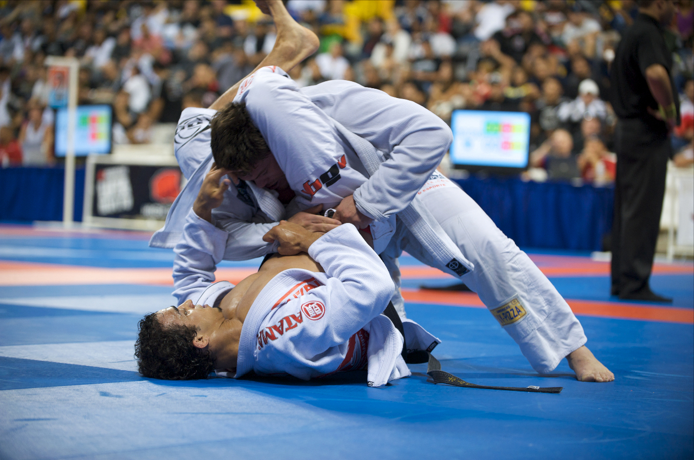

El mundo de las artes marciales mixtas
Las MMA combinan diferentes disciplinas de combate, como el boxeo, el jiu-jitsu brasileño, el muay thai y la lucha libre.
Tu espacio para vivir las artes marciales mixtas
Tu espacio dedicado a las artes marciales mixtas. Conoce las últimas noticias, los peleadores más destacados y los eventos más importantes del MMA.
Las MMA combinan diferentes disciplinas de combate, como el boxeo, el jiu-jitsu brasileño, el muay thai y la lucha libre.
Las artes marciales mixtas han evolucionado hasta convertirse en uno de los deportes de combate más reconocidos a nivel internacional.

Disciplina enfocada en técnicas de golpeo con los puños.

Arte marcial especializado en combate en el suelo y sumisiones.

Disciplina que utiliza puños, codos, rodillas y patadas.